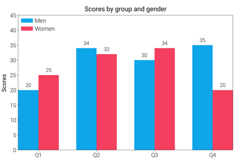
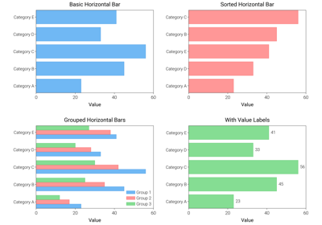
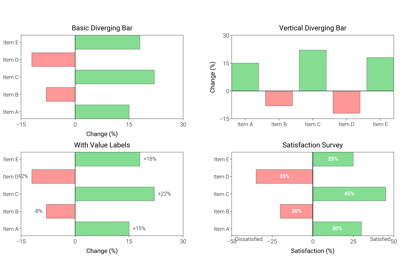
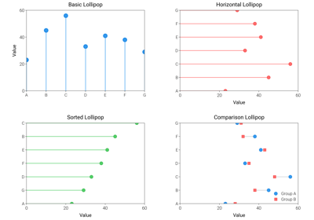
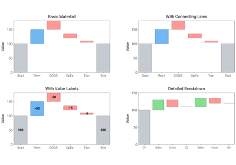
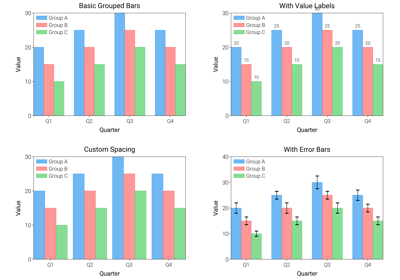

Bar Charts¶
Various bar chart styles including grouped, stacked, horizontal, and waterfall charts for categorical data visualization and comparisons.

Bar Charts

Horizontal Bar Charts

Diverging Bar Charts

Lollipop Charts

Waterfall Charts


Grouped Bar Chart